Introduction
TA-MU Hotels is a small, privately owned hotel business. Currently, TA-MU Hotels owns two hotels: One in the heart of Manhattan, NYC and another in Cancun, Mexico. TA-MU Hotels is looking to grow its business and hired us (TheBayesianBandit LLC) to look into how their respective hotels are performing. Specifically, our goal is to generate more profit for TA-MU Hotels by identifying profitable opportunities from their hotel booking data.
Background on Data
The dataset supplied to us contained a total of 119,390 rows with 37 columns. Columns ranged from information containing arrival information of guests, number of guests (adults, children, babies), to marketing information such as lead time and distribution channel. The data was generally clean with the exception of a few incorrect data types. Additionally, there were a few rows of observation that were extreme outliers (ie 50+ guests for a single booking) that did not pertain to the general business model of TA-MU Hotels, so they were eventually removed during the analysis for more accurate analysis of guest booking data.
The analysis of this report was done with Python. The creation of this report was done with Quarto. The raw data for this report can be found here.
Overview of TA-MU Hotels Business Performance
Revenue Generation
As noted in the introduction, TA-MU Hotels currently has two operating hotels. Figure 3.1 shows the current revenue generation by TA-MU Hotels on a daily level. The top panel indicates the total revenue of both hotels while the bottom panel shows the amount of revenue generated by each hotel.
Figure 3.1 shows a general trend of increasing revenue for the company. There also appears to be indications of seasonality in the total company revenue as revenue slows during the winter months and rises again in the spring and summer. Viewing the revenue splits by hotel types, generally the city hotel generates more revenue throughout the year. The resort hotel appears to have large spikes in revenue during the holiday season (December-January). In general, revenue for TA-MU Hotels appears to be gradually increasing over time.
While the city hotel generally brings in the most revenue per day, Figure 3.2 shows that the resort hotel during peak times has more money generated per guest. There appears to be a recurring trend of high spending guests between the months of July-September at the resort hotel.
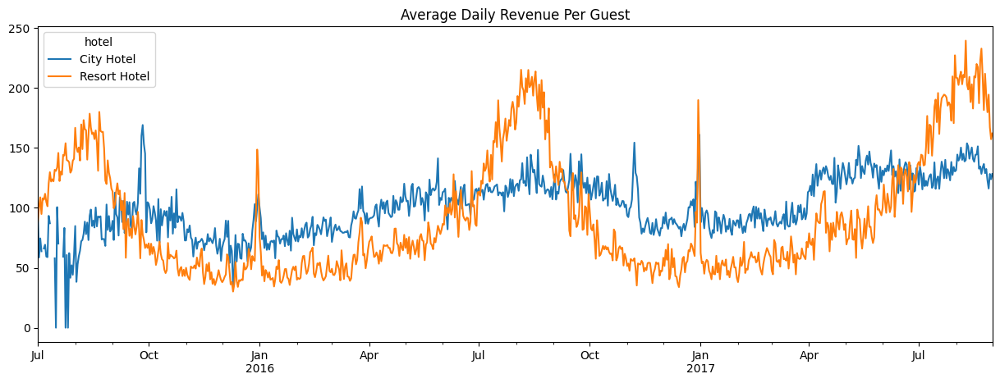
While Figure 3.1 and Figure 3.2 show the daily revenue generation, we were also curious to see if the amount of money spent by guests differed by their respective length of stay. Figure 3.3 breaks down the average amount of money spent per night by the length of stay for each booking.
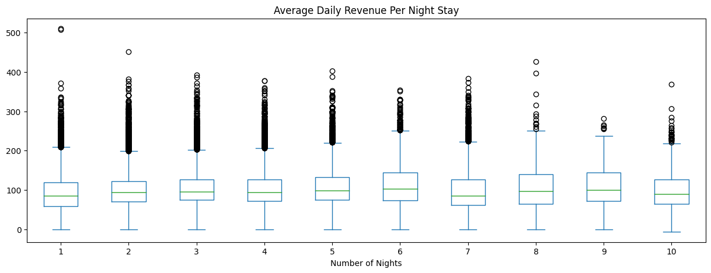
From Figure 3.3, we see that there is no major difference between the average amount of money spent per night by the length of stay. Customers who only stay one night spend about the same on average per night as those who stay three nights. This result is again seen in Figure 3.4 when we take at each hotel’s average customer expenditure per night.
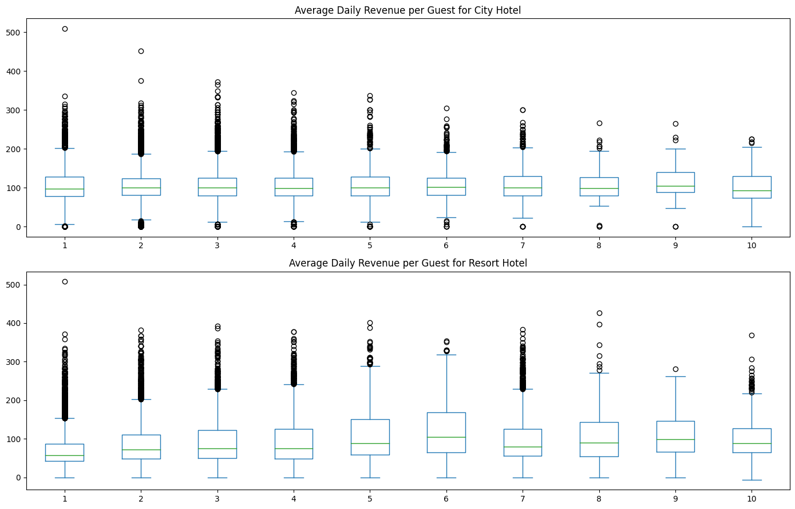
Client Demographics
Identifying who are our clients generating revenue for our business is the first step in understanding how we strategize to generate more revenue. Figure 3.5 shows the daily average number of people per booking at each hotel.
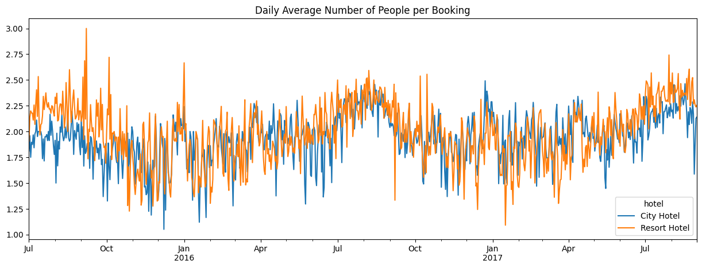
It appears that on average, the lines for both hotels hover mostly in the two people per booking area. There are a few highs and lows indicating that the average at times could be close to one guest per booking or three guests per booking. Table 3.1 goes into more detail by looking into specific demographic details and the percent of bookings each demographic represents.
| Hotel | Number of Adults | Kids in Booking | Customer Type | % Bookings |
|---|---|---|---|---|
| City Hotel | 2 | No | Transient | 33% |
| Resort Hotel | 2 | No | Transient | 18% |
| City Hotel | 2 | No | Transient-Party | 10% |
| City Hotel | 1 | No | Transient | 9% |
| Resort Hotel | 2 | No | Transient-Party | 4% |
Table 3.1 shows the top five demographics based on percent of bookings. From the table, we see that our biggest client demographic is two adults of customer type transient (when the booking is not part of a group or contract and is not associated with another transient booking) and no kids in the booking. Both the city hotel and resort hotel have this demographic as their most popular client demographic, with over 50% of total company bookings from this demographic alone. Additionally, in 3rd and 5th place respectively are two adult parties as well but of transient party (booked with a connection to at least one other transient booking).
Lost Revenue
Important Note: For the column “is_canceled”, it is a binary classification for canceled = 1 and not canceled = 0.
Now that we have identified TA-MU Hotels’ current revenue generation trends and their primary clients, we will identify areas of improvement based on lost revenue. Lost revenue primarily comes from canceled bookings. We see in Figure 3.6 that the city hotel, while generating the most bookings overall, also has a larger proportion of canceled bookings than the resort hotel.
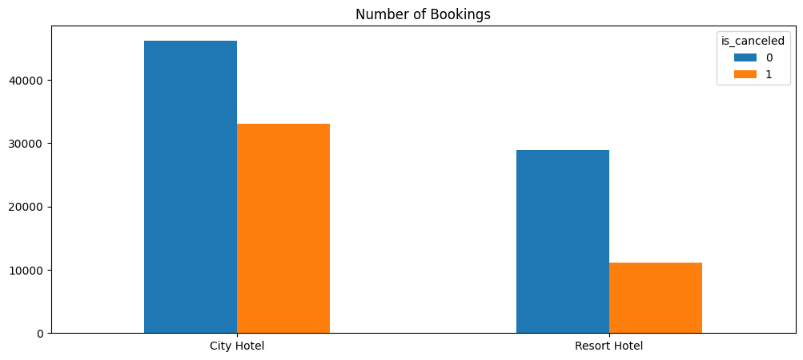
In order to quantify the impact of these cancelations, Figure 3.7 shows the daily gain of non-canceled bookings vs the daily loss of canceled bookings for each hotel.
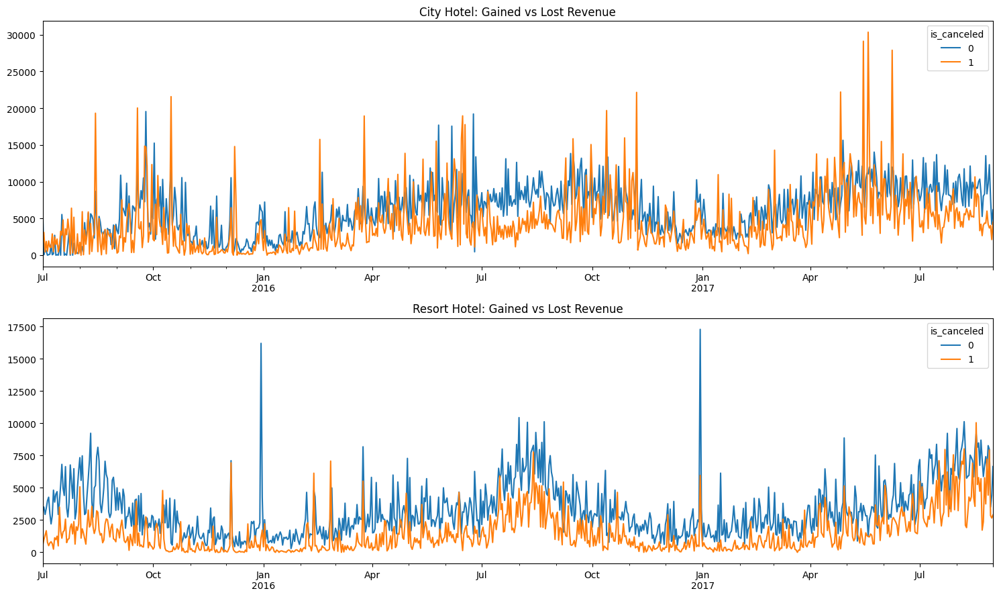
As we can see in Figure 3.7, the city hotel has quite a few times where lost revenue overtakes revenue gained. Several times we see large spikes in canceled bookings and subsequently large spikes in lost revenue. In contrast, it appears the resort hotel rarely has any days where lost revenue overtakes revenue gained. To further dive into the details of all this lost revenue, we can view Table 3.2 to see how many cancelations occur from our top five client demographics.
| Hotel | Number of Adults | Kids in Booking | Customer Type | % Bookings | % Bookings Canceled |
|---|---|---|---|---|---|
| City Hotel | 2 | No | Transient | 33% | 48% |
| Resort Hotel | 2 | No | Transient | 18% | 33% |
| City Hotel | 2 | No | Transient-Party | 10% | 32% |
| City Hotel | 1 | No | Transient | 9% | 42% |
| Resort Hotel | 2 | No | Transient-Party | 4% | 22% |
Table 3.2 reveals a troubling finding for our top five client demographics. Our number one demographic currently has canceled about 48% of bookings! Our number two demographic, of the same type but at the resort hotel, also boasts a very high 33% canceled bookings. Identifying the reasons behind these cancelations are paramount in helping TA-MU Hotels increase their profitability.
Canceled Bookings Detail
To further investigate the reasons behind these cancelations for our top demographics, we first investigate the relationship between lead time (time from when booking first entered system to arrival date) and cancelations. Figure 3.8 shows the average lead time between non-canceled bookings and canceled bookings (split by hotel type).
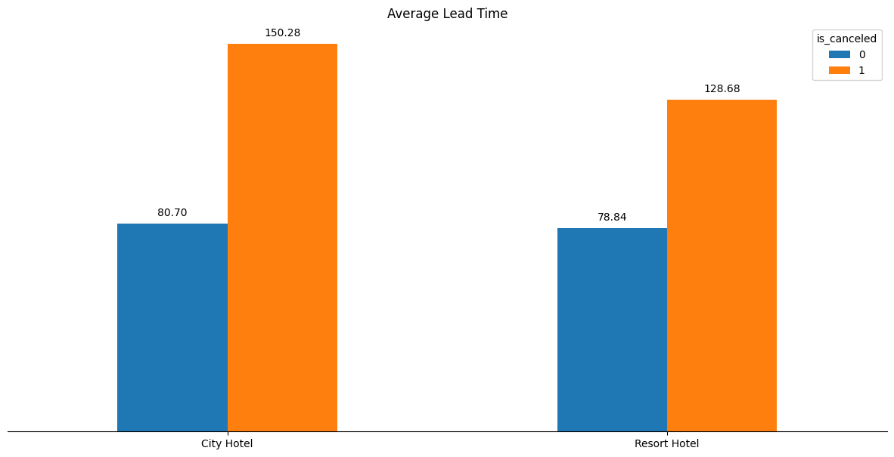
From Figure 3.8, we see that there is a large discrepancy between average lead time between non-canceled and canceled bookings. Particulary, in the city hotel, the canceled bookings nearly have double the lead time on average compared to non-canceled bookings. To further dive into the details of the relationship between canceled bookings and lead time, Figure 3.9 shows the average lead time broken down by how the booking was created (through what marketing channel) split by hotel type and booking status.
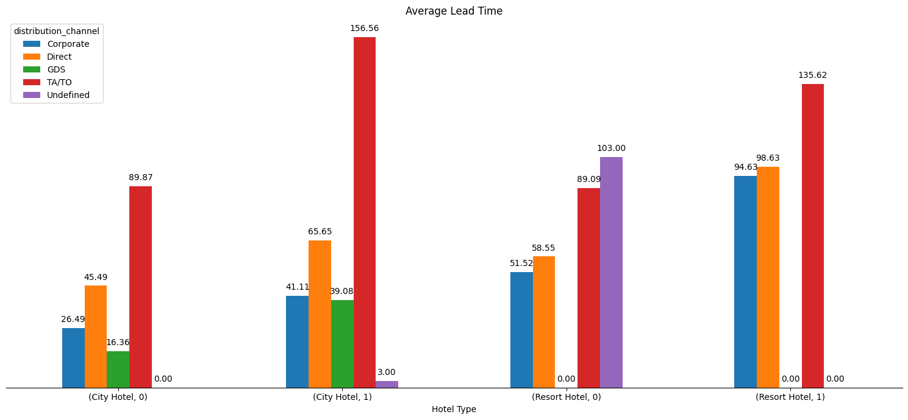
The barplots marked with 0s are bookings that were non-canceled and the barplots with 1s are bookings that were canceled (ie (City Hotel, 0) is average lead time for bookings that were not canceled). As we can see there are still large discrepancies between not canceled and canceled bookings, especially for the city hotel. The TA/TO distribution channel appears to generate the largest lead times for canceled bookings in both the city hotel and the resort hotel.
Proposed Strategy
To aid TA-MU Hotels reach greater profitability, we propose that we attack the problem of canceled bookings by following a common approach in the airline business: overbooking hotels by predicting cancelations/no-shows. We will approach this problem by first identifying our target market for this approach and later elaborate and demonstrate the effectiveness of a predictive model to implement this strategy.
Target Market
As noted in Table 3.2 and Table 3.1, over 50% of TA-MU bookings are generated by a single demographic: two adults, transient, no kids. To help TA-MU Hotels become more profitable, we propose that we priortize this demographic for the remainder of the report with the goal of minimizing the effects of canceled bookings and maximizing profits from this primary demographic.
To confirm our findings from the canceled bookings detail section, we run the same analyses performed in that section but just on our focused demographic. Figure 4.1 shows the average lead time split by hotel type for non-canceled and canceled bookings, focused on our primary demographic.
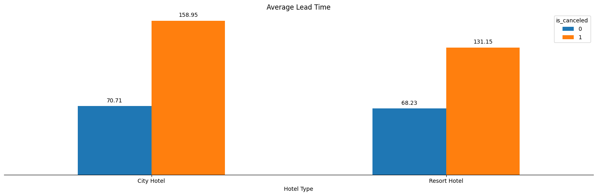
As we can see in Figure 4.1, we confirm that the discrepancies between lead time of non-canceled and canceled bookings exist for our primary demographic. To get a further detailed view of where our primary demographic cancels their bookings, we plot in Figure 4.2 the percent of canceled bookings split by distribution channel and hotel type.
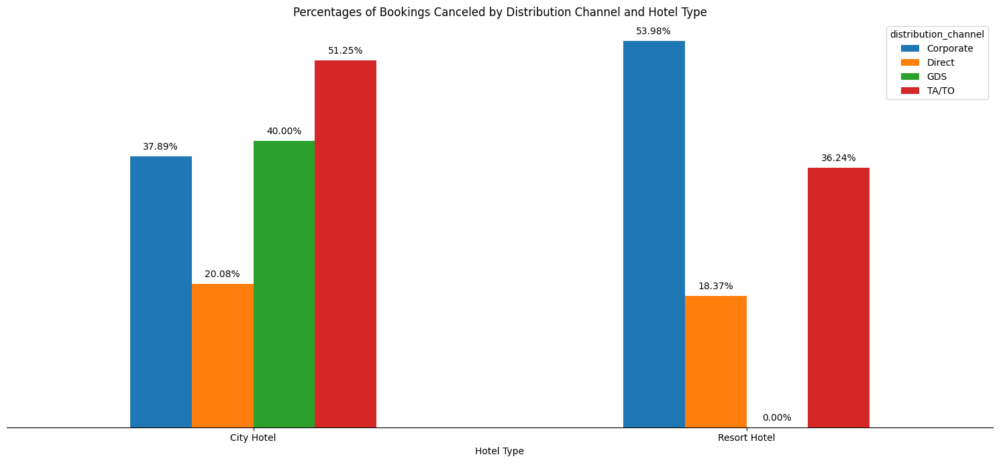
It appears that for our primary demographic (two adults, transient, no kids in booking), the highest percentage of cancellations for the city hotel are bookings made through the TA/TO channel. For the resort hotel, the highest percentage of cancellations are bookings made through the corporate channel.
Predictive Model for Cancelations (primary demographic only)
To aid TA-MU Hotels in their quest to reach greater profitability, we propose creating a model that predicts whether a booking will be canceled or not. This model will aid in helping management know whether or not hotels are booked to capacity and if they can continue to take reservations to increase the likelihood of generating revenue for non-canceled bookings.
Data Setup
We begin the process of creating a good predictive model by ensuring that the data we feed the model is accurate and useful. To do this, we dropped irrelevant columns to our analysis and filter it to include only data pertaining to our primary demographic. Additionally, we create dummy variable columns in order to account for factors in our model (i.e. distribution channel). The result of our data cleaning and feature engineering is a change from raw data of 119390 rows of data and 37 columns to training data of 61024 rows and 24 columns of data.
To help our model more accurately predict cancelations, we use a standard scaler to standardize each column of data. This will help the model recognize each feature as a normally distributed variable. Furthermore, to help determine the predictive capability of our model, we use a train-test split of 75% training and 25% test data. This allocation is randomly done by the train_test_split function provided in scikit-learn.
Model Selection
In order to determine whether or not we should use the full dataset of 24 features for our model or if a subset of these features would be adequate, we perform forward stepwise selection using a logistic regression model. The results of our model selection procedure are found below.
Index(['lead_time', 'stays_in_weekend_nights', 'previous_cancellations',
'previous_bookings_not_canceled', 'booking_changes',
'required_car_parking_spaces', 'distribution_channel_TA/TO',
'reserved_room_type_E', 'deposit_type_Non Refund',
'deposit_type_Refundable', 'hotel_Resort Hotel'],
dtype='object')These 11 features, according to forward stepwise selection, are the features that provide the greatest additional improvement to the model. To test this theory, we compared a logistic regression model with these 11 features against a logistic regression model with all 24 features. The results show that the models performed equally as well at predictive accuracy (both around 75%). We determine that using less features is more computationally efficient for similar predictive accuracy so we will use the 11 features that we found with the forward stepwise selection for the remainder of the iterative process of building a predictive model.
Additional Features
As noted previously in the report, there could be interactions between some of these features. For example, the effect that lead time has on the probability of a cancelation might change based on the kind of distribution channel the lead came from. Therefore, we will add two extra features to current subset of 11 features for our predictive model: interaction between distribution channel and lead time, and interaction between distribution channel and hotel type.
Model Comparisons
Logistic Regression
We begin with logistic regression to see if this kind of model performs well at predicting cancelations. After fitting our training data to our logistic regression model, we obtainthe following results.
| Dep. Variable: | is_canceled | No. Observations: | 45768 |
| Model: | GLM | Df Residuals: | 45754 |
| Model Family: | Binomial | Df Model: | 13 |
| Link Function: | Logit | Scale: | 1.0000 |
| Method: | IRLS | Log-Likelihood: | -21165. |
| Date: | Thu, 25 Apr 2024 | Deviance: | 42330. |
| Time: | 13:11:47 | Pearson chi2: | 3.81e+07 |
| No. Iterations: | 28 | Pseudo R-squ. (CS): | 0.3573 |
| Covariance Type: | nonrobust |
| coef | std err | z | P>|z| | [0.025 | 0.975] | |
| const | 2.5268 | 3333.240 | 0.001 | 0.999 | -6530.503 | 6535.557 |
| x1 | 0.5459 | 0.016 | 33.679 | 0.000 | 0.514 | 0.578 |
| x2 | -0.0389 | 0.012 | -3.250 | 0.001 | -0.062 | -0.015 |
| x3 | 1.9948 | 0.127 | 15.751 | 0.000 | 1.747 | 2.243 |
| x4 | -0.6542 | 0.061 | -10.808 | 0.000 | -0.773 | -0.536 |
| x5 | -0.1151 | 0.013 | -8.943 | 0.000 | -0.140 | -0.090 |
| x6 | -7.3338 | 6598.810 | -0.001 | 0.999 | -1.29e+04 | 1.29e+04 |
| x7 | 0.2570 | 0.016 | 16.150 | 0.000 | 0.226 | 0.288 |
| x8 | 0.0512 | 0.012 | 4.387 | 0.000 | 0.028 | 0.074 |
| x9 | 11.0061 | 6281.574 | 0.002 | 0.999 | -1.23e+04 | 1.23e+04 |
| x10 | 0.4591 | 6533.082 | 7.03e-05 | 1.000 | -1.28e+04 | 1.28e+04 |
| x11 | -0.0209 | 0.013 | -1.658 | 0.097 | -0.046 | 0.004 |
| x12 | 0.0620 | 0.019 | 3.326 | 0.001 | 0.025 | 0.099 |
| x13 | -0.0320 | 0.013 | -2.467 | 0.014 | -0.057 | -0.007 |
Features x1, x3, x7, x8, and x12 (lead time, previous cancellations, distribution channel TA/TO, reserved room type E, interaction between lead time and distribution channel TA/TO) show an increase in the log-odds of a cancelation and appear to be statistically significant (alpha = 0.05). Conversely, x2, x4, x5, and x13 (stays in weekend nights, previous bookings not canceled, booking changes, and interaction between distribution channel TA/TO and hotel type) show a decrease in the log-odds of a cancelation.
Using this fitted logistic regression model, we can generate predictions and see how the model does at predicting cancelations using our test data. One metric to test the predictive capability of a classification type model is using a ROC curve and computing the AUC score from it. Figure 5.1 shows the corresponding ROC curve and AUC score.
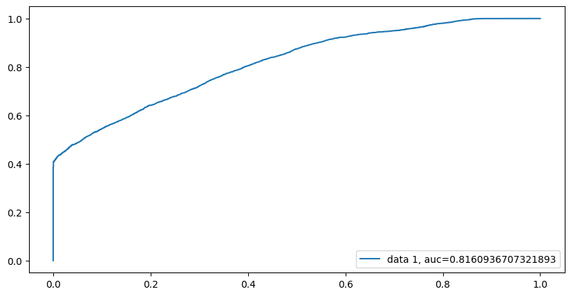
The ROC curve in Figure 5.1 shows that the model achieves an AUC score of about .82, indicating that the model does a pretty good job at distinguishing between a canceled booking and a non-canceled booking. Using this graph, we can extract the optimal threshold that minimizes our false positive rate while still achieveing a max true positive rate. Using this threshold, we can construct a confusion matrix to gain further inference on how the model performs on discovering cancelations. Figure 5.2 shows the resulting confusion matrix.
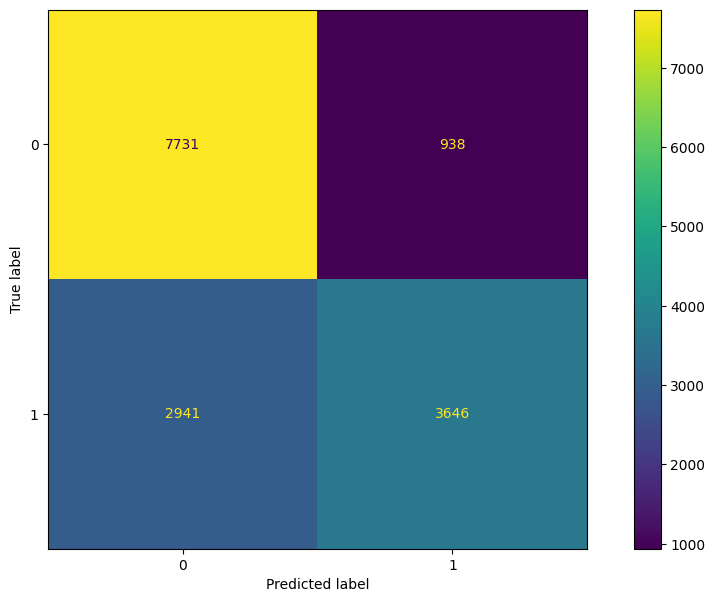
From the confusion matrix, we see that the logistic regression model does a very good job at identifying non-canceled bookings, but does not perform as well at identifying canceled bookings. However, while the performance does drop significantly between canceled and non-canceled booking classification, the majority of the time the model does predict the correct label for canceled bookings. To view more specific metrics from the confusion table, we can view Table 5.1.
| Metric Name | Score |
|---|---|
| Accuracy | 75% |
| Sensitivity | 55% |
| Specificity | 89% |
| PPV | 80% |
| NPV | 72% |
From Table 5.1, we see that our logistic regression model performed well in every category except sensitivity. Even then, the sensitivity score is an acceptable one since the majority of the time it correctly labels a cancelation.
Random Forest
We now compare a tree based method approach to logistic regression by using a random forest. As we performed above, we will fit a random forest with the same training data and gather predictive metrics (AUC score, confusion matrix metrics) by using the same test set as the logistic regression model. Figure 5.3 shows the ROC curve and corresponding AUC score for the random forest model.
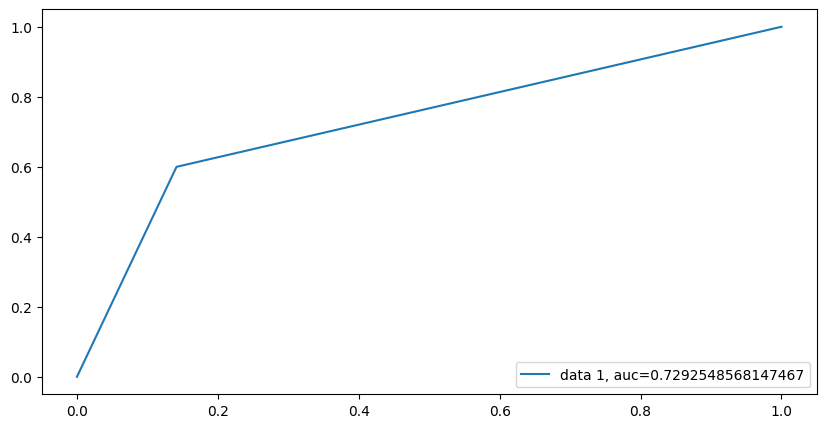
From Figure 5.3, we see that the random forest model yielded a worse AUC score than the logistic regression model. We will check the resulting confusion matrix metrics for further comparison. Figure 5.4 contains the confusion matrix and Table 5.2 shows the resulting metrics from the confusion matrix.
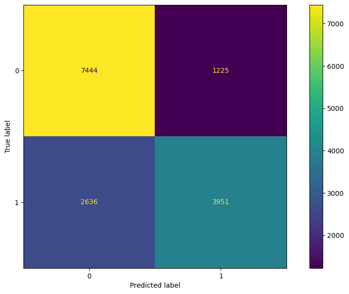
Table 5.2: Random Forest Model vs Logistic Regression Model
| Metric Name | Score |
|---|---|
| Accuracy | 75% |
| Sensitivity | 60% |
| Specificity | 86% |
| PPV | 76% |
| NPV | 74% |
| Metric Name | Score |
|---|---|
| Accuracy | 75% |
| Sensitivity | 55% |
| Specificity | 89% |
| PPV | 80% |
| NPV | 72% |
From Table 5.2 (a) and comparing these values to Table 5.2 (b), the random forest model performed very similarily to the logistic regression model. The random forest model achieved a higher sensitivity score while dropping in the specificity score. Additionally, the random forest model dropped in PPV but gained in NPV.
XGBoost
Since the random forest model did not appear to beat out the performance of the logistic regression model, we will now perform a comparison between XGBoost classification and the logistic regression model. We will perform the same procedures as done with the logistic regression model and the random forest model. Figure 5.5 shows the resulting ROC curve and corresponding AUC score.
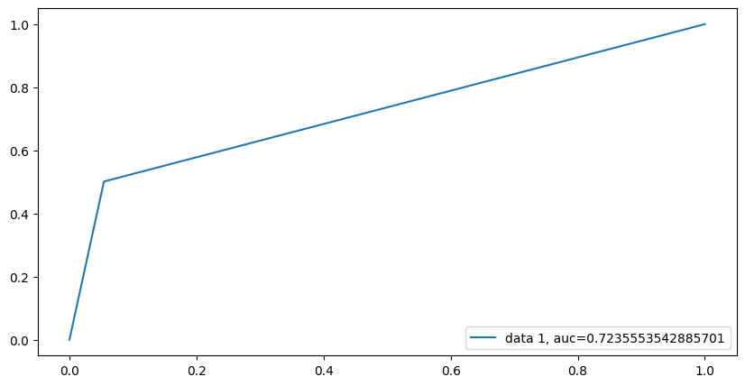
The AUC score for the XGBoost model appears to be very similar to the random forest model, and consequently is much lower than the logistic regression model AUC. Figure 5.6 and Table 5.3 show the resulting confusion matrix and corresponding metrics.
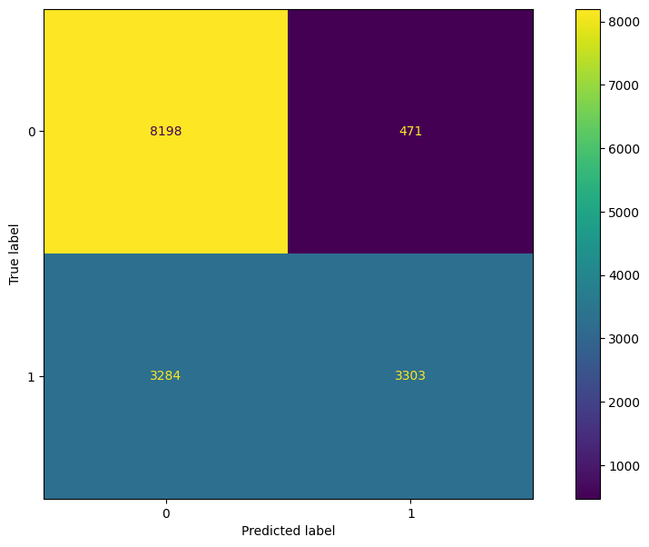
Table 5.3: XGBoost vs Logistic Regression Model
| Metric Name | Score |
|---|---|
| Accuracy | 75% |
| Sensitivity | 50% |
| Specificity | 95% |
| PPV | 88% |
| NPV | 71% |
| Metric Name | Score |
|---|---|
| Accuracy | 75% |
| Sensitivity | 55% |
| Specificity | 89% |
| PPV | 80% |
| NPV | 72% |
From Table 5.3, we see that XGBoost improves in specificity over the logistic regression model, but decreases at almost the same degree in sensitivity. There is also a large jump in PPV and a slight decline in NPV for XGBoost over logistic regression.
Bayesian Logistic Regression
Thus far we have attempted to compare the logistic regression model to more ensemble-esque methods. We now attempt to demonstrate a different approach to the logistic regression model by incorporating priors on each feature. That is, we will perform a bayesian logistic regression to compare to the normal logistic regression method.
Due to our limited subject matter expertise in the hotel industry, we will use uninformative priors for each feature. We will assume that each feature is drawn from a normal distribution with mean = \(\mu\) and standard deviation = \(\sigma\). For each \(\mu\), we will place a prior of a normal distribution with \(\mu\) = 0 and \(\sigma\) = 2. For each \(\sigma\), we will place a prior of a inverse gamma distribution with \(\alpha\) = 1 and \(\beta\) = 1.
For our sampler, we will use a Hamiltonian Monte Carlo with Energy Conserving Sampling. This is chosen due to the size of our dataset and the lack of sufficient computational power to perform a more precise sampling with sampler such as the No-U Turn sampler. After fitting our bayesian logistic regression model, we obtain the following results in Figure 5.7.
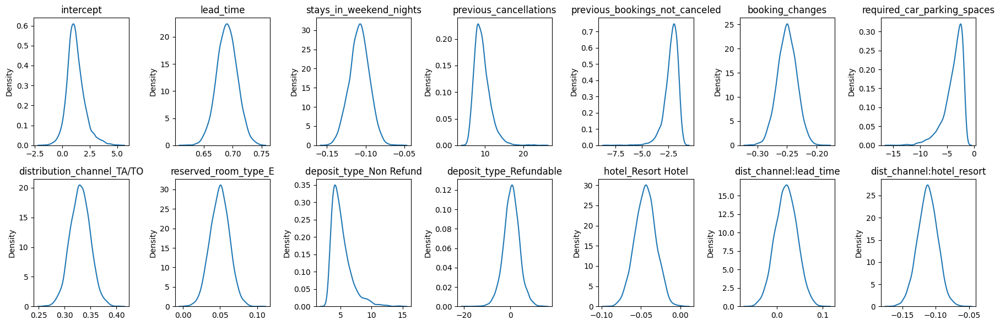
A benefit of performing a bayesian model is the viewable uncertainty around parameters of interest. In our case, we can see the distributions of each beta value from our model. For example, the change in log-odds on booking status by lead time is likely to be around .7, but can be anywhere between .65 and .75, according to our model. Additionally, our predictions can also have this kind of uncertainty around them. For example, below is information pertaining to a booking that ended up canceling.
lead_time 110.0
stays_in_weekend_nights 0.0
previous_cancellations 0.0
previous_bookings_not_canceled 0.0
booking_changes 0.0
required_car_parking_spaces 0.0
distribution_channel_TA/TO 1.0
reserved_room_type_E 0.0
deposit_type_Non Refund 0.0
deposit_type_Refundable 0.0
hotel_Resort Hotel 0.0
Name: 10000, dtype: float64We see that there were 110 days between lead entered into system and arrival date, that they were staying in the city hotel (hotel_resort = 0) and that they booked throuh TA/TO. Using our bayesian model, we can view the uncertainty around this prediction, as shown in Figure 5.8.
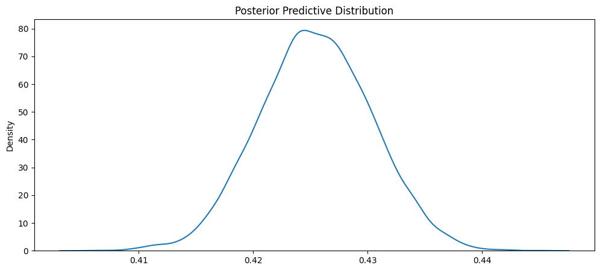
From Figure 5.8, we see that the most likely value from the distribution is around .42 to .43. According to the distribution, the probability that somebody with this kind of booking information (from our primary demographic) cancels is around .41 to .44.
While the world of bayesian modeling is fascinating and can be powerful, the goal remains the same of providing a model that could be of use to us in identifying where we need to double book rooms in order to maximize profit for TA-MU Hotels. Just like in the other sections, we will compare the AUC score and derived confusion matrix metrics. Figure 5.9 shows the ROC curve for our bayesian model.
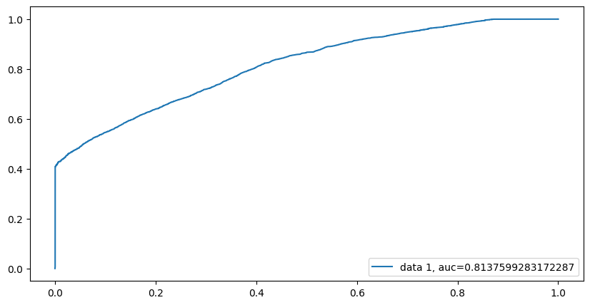
From Figure 5.9, we see that the AUC score is very similar to the original logistic regression model. Figure 5.10 shows the corresponding confusion matrix and Table 5.4 show the comparison between the bayesian logistic regression model and the regular logistic regression model.
Table 5.4: Bayesian Logistic Regression Model vs Logistic Regression Model
| Metric Name | Score |
|---|---|
| Accuracy | 75% |
| Sensitivity | 53% |
| Specificity | 92% |
| PPV | 84% |
| NPV | 72% |
| Metric Name | Score |
|---|---|
| Accuracy | 75% |
| Sensitivity | 55% |
| Specificity | 89% |
| PPV | 80% |
| NPV | 72% |
From Table 5.4, we see that the two models are very similar. The bayesian model shows a slight increase in specificity and a small decrease in sensitivity. The bayesian model also shows an increase in PPV while keeping NPV the same as the regular logistic regression model.
Model Decision
While all 4fourmodels proved to be viable models worthy of use in our system, the two logistic regression models had higher AUC scores and were more balanced in the sensitivity-specificity trade-off. To decide which logistic regression model to use, we look at the confusion matrix metrics and AUC scores. Both models have similar confusion matrix metrics and AUC scores. However, the bayesian logistic regression model has a particular advantage over the regular logistic regression model due to its inherit ability at including uncertainty around parameter estimates and predictions. Therefore, we recommend that we continue with the bayesian logistic regression model as our initial cancelation predictive model.
The full model for our bayesian logistic regression model is shown in Equation 5.1
\[ \text{log}(\frac{p(Y)}{1-p(Y)}) = \beta_0 + \beta_1x_1 ... + \beta_{m}x_m \]
\[ \text{Y}_1 ... \text{Y}_n \overset{\text{i.i.d.}}{\sim} \text{Bernoulli}(p) \]
\[ \beta \sim N(\mu, \sigma) \]
\[ \mu \sim N(0, 2) \]
\[ \sigma \sim IG(1, 1) \tag{5.1}\]
Equation 5.1 states that the log-odds of booking status (1 being cancelation and 0 being non-cancelation) is a linear function of \(m\) predictors (our 11 features and two interaction terms) weighted by \(m+1\) betas (13 for the features and one intercept beta). Our response variable \(Y\) is a collection of n number of i.i.d. Bernoulli random variables with probability \(p\). Our betas are assumed to be normally distributed with mean \(\mu\) and standard deviation \(\sigma\). All \(\mu\) values have a normal prior distribution with mean = 0 and standard deviation = 2. All \(\sigma\) values have an inverse gamma prior distribution with shape = 1 and scale = 1.
Example Business Impact
As discussed earlier in the report, the goal of this analysis and resulting predictive model from the analysis is to help TA-MU Hotels reach higher profitability. To do this, we will use the predictive model to determine which future bookings will most likely be canceled and therefore can still be booked, helping TA-MU Hotels become more profitable by having less vacant rooms per day.
To demonstrate the potential business impact this model can have, consider the following dataset for the city hotel of guests (from our primary demographic) who are supposed to arrive on 06-12-2017. On this date, there are 98 bookings for our primary demographic. Of the 98 bookings, 43 of them canceled. We will use the predictive capability of our model to see how close we can get to this number.
Using just the maximum a posteriori from each posterior predictive distribution, we predicted that 30 of the bookings would have canceled! Additionally, of the 98 bookings, the model got 77 of the 98 booking statuses correct (matched canceled to canceled and non-canceled to non-canceled correctly). While the model is not perfect at predicting every label correctly, because the model underpredicted the number of cancelations, we would still have open rooms to move people to if we ended up double-booking a particular room. While we acknowledge this may have an effect on customer experience, the saved revenue by filling 30 extra rooms is worth the price. As well, with the additional revenue, we can invest some of the increased revenue in helping improve the customer experience.
From our simple business case, Figure 6.1 shows the revenue generated that day vs potential revenue added if we were to have filled the 30 extra rooms.
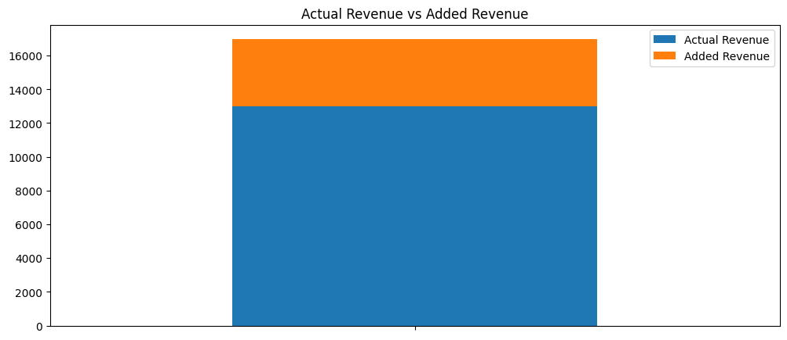
Figure 6.1 shows that for this particular day in June, we could have seen an additional $3,981 of revenue. This would be approximately a 31% increase in revenue for this one day. While these calculations assume the added revenue would be at least the average of the revenue generated per customer this scenario nonetheless would yield higher profits in the long run for TA-MU Hotels.
Conclusion
This report demonstrated that TA-MU Hotels is a profitable hotel business operation. We identified how much revenue is generated daily by both hotels, who the main clients are in each, and how much TA-MU Hotels is losing due to canceled bookings and unfilled hotel rooms. We created a predictive model that has the capacity to identify which bookings will be canceled or not canceled, allowing TA-MU Hotels to overbook rooms to generate more revenue.
Next steps include implementing the model into the TA-MU systems to begin the strategic approach of “overbooking” rooms. As well, more refinement can be made with the bayesian logistic regression model, namely: testing new model selection methods to find “better” variables for the model, adjusting criteria for predicting cancelation (i.e. swap to a 95% credible interval range for cancelation labeling), and possibly adding more models to our system to enhance the customer experience (predict repeat bookings, gather inference on customer churn, etc).